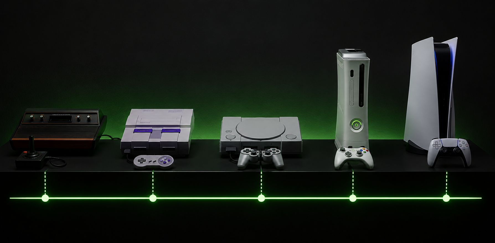

A Evolução dos Videogames
A história dos consoles é marcada por saltos tecnológicos incríveis, transformando pixels simples em gráficos realistas que vemos hoje em dia.
Linha do Tempo de Consoles Marcantes
Veja abaixo alguns dos videogames que ajudaram a construir essa indústria:
| Console | Ano de Lançamento | Empresa |
|---|---|---|
| Atari 2600 | 1977 | Atari |
| Super Nintendo (SNES) | 1990 | Nintendo |
| PlayStation 1 | 1994 | Sony |
| Xbox 360 | 2005 | Microsoft |
| PlayStation 5 | 2020 | Sony |
